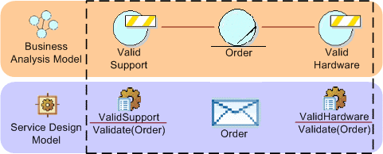

|
Certain classes of solutions tend to rely heavily on the use of Business Rules to extract the variability from
the solution and externalize such that the rules can evolve outside of the main application logic. From a Business
Analysis Model including Business Entities and Business Rules, it is possible to define services that encapsulate the
business rules, externalizing them from the rest of the logic of the solution. The following diagram demonstrates a
small, sample business-analysis model showing two business rules attached to the business entity named Order. These
rules, as they are attached to a business entity, are most likely to correspond to invariants on the entity and so will
be evaluated on any change in state of the entity. Rules may also be attached to actions or processes and are more
often evaluated as pre-conditions or post-conditions for the action.

In modeling the example above, it is assumed that there is a traceable relationship between the service specifications
derived from the business rules and between the message(s) derived from the business entity.
In many cases complex rules are aggregated into Rule Sets, these are much more of a match for the granularity of
service, allowing, for example, a document to be passed to the validation service where the set of rules are evaluated
and the results returned. From the example above, we can easily imagine that the validation services actually embody
quite a complex set of rules for validating the compatibility of items ordered, quantities, and so on.
|